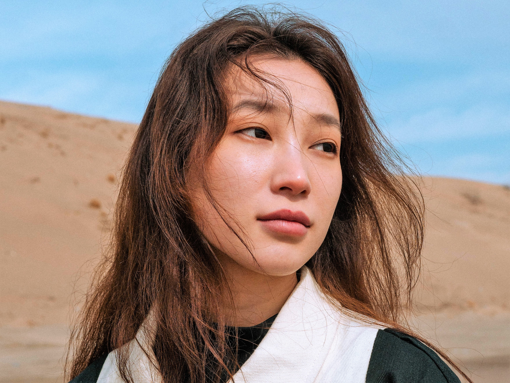

Our Talents


Your imagination brought to life!!
We give you amazing content, state of the art images and videos. We
try to recreate what you imagine, and guess what!? we often deliver.
We cover events and home service are available.
We run projects for firms that are in need of our high quality talent
in Photography. We also hire photography staffs for firms. We approach
photography with a romantic, impressionist sensibility. Over the past
decade, We have had the pleasure of documenting some of the most
iconic and exclusive celebrations for discerning patrons in over
twenty countries and six continents. We have been named one of the top
film photographers in the world and featured in numerous prestigious
publications such as Harpers Bazaar, Elle, Town & Country and Martha
Stewart Weddings
We are a team of photogtaphers assembled by our founder and CEO Jeff freeman. Our head office is located in middlesbrough but we have staff stationed all over europe. We are a fiercely dedicated medium format film photographers and our creative process is imaginative, industrious and detailed. In each capture, We aim for perfection and beauty. Over the last ten years, Our work has taken us to spectacular celebrations and sophisticated soirees in over twenty countries on six different continents. Past clients have included prominent global leaders, celebrated directors and actors, and distinguished executives. We have been named one of the top 25 film photographers in the world and a “photographer’s photographer” by Martha Stewart Weddings. Our work has been featured in numerous international publications, including Rangefinder, Elle, Harper’s Bazaar, Town & Country Weddings, Brides Magazine, The Knot, Martha Stewart Magazine, The Boston Globe and New York Magazine. Our clients describe Our work as “painterly,” “nuanced,” “refined” and We am honored to be a leading choice amongst internationally acclaimed planners and designers.
We are good listeners and we are ever ready to take your reaquest. Our service is top notch, and your satisfaction is our priority. We give swift and on time product delivery with option of redo in case of dissatisfaction or error on our side. Our luminous imagery is understated, yet evocative, resulting from clear and polished creative direction and an exceptional eye for beauty. Our fresh and simple composition, and use of natural light has evolved from a deep love and respect for the art and craft of shooting film. Our clients describe Our work as “painterly,” “nuanced,” “refined” and We are honored to be a leading choice amongst internationally acclaimed planners and designers.